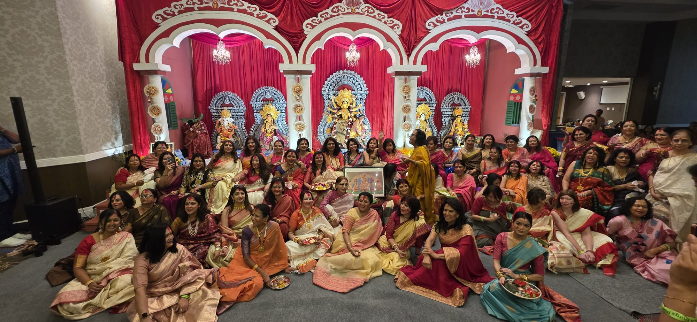

Puja & Rituals
Traditional observances presented in a welcoming, community-centered setting.
Signature celebration
The centerpiece of the BCSSJ calendar — a weekend of worship, culture, food, family, and joyful reunion.
Traditional observances presented in a welcoming, community-centered setting.
Dance, music, performances, and participation from adults and children.
A festival atmosphere built around shared meals, reunion, and conversation.
This page can feature member and non-member pricing, schedules, and sponsor blocks.
Festival moments
A more immersive festival page with real BCSSJ imagery makes the celebration feel alive even before visitors arrive.

